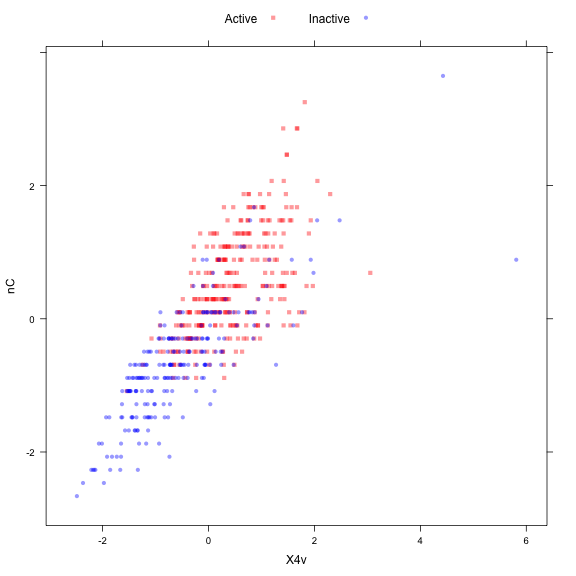
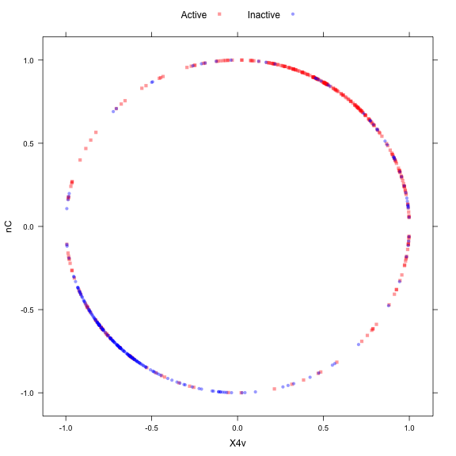
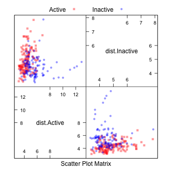

caret includes several functions to pre--process the predictor data. Assumes that all of the data are numeric (i.e. factors have been converted to dummy variables via model.matrix, dummaryVars or other means).
Creating Dummy Variables
The function dummyVars can be used to generate a complete (less than full rank parameterized) set of dummy variables from one or more factors. The function takes a formula and a data set and outputs an object that can be used to create the dummy variables using the predict method.
For example, the etitanic data set in the
earth package includes two factors:
pclass1 (with levels
1st, 2nd, 3rd) and sex (with levels female, male). The base R function model.matrix would generate the following variables:
(Intercept) pclass2nd pclass3rd sexmale age sibsp parch
1 1 0 0 0 29.0000 0 0
2 1 0 0 1 0.9167 1 2
3 1 0 0 0 2.0000 1 2
4 1 0 0 1 30.0000 1 2
5 1 0 0 0 25.0000 1 2
6 1 0 0 1 48.0000 0 0
Using dummyVars:
pclass.1st pclass.2nd pclass.3rd sex.female sex.male age sibsp parch
1 1 0 0 1 0 29.0000 0 0
2 1 0 0 0 1 0.9167 1 2
3 1 0 0 1 0 2.0000 1 2
4 1 0 0 0 1 30.0000 1 2
5 1 0 0 1 0 25.0000 1 2
6 1 0 0 0 1 48.0000 0 0
Note there is no intercept and each factor has a dummy variable for each level, so this parameterization may not be useful for some model functions, such as lm.
Zero- and Near Zero-Variance Predictors
In some situations, the data generating mechanism can create predictors that only have a single unique value (i.e. a "zero-variance predictor"). For many models (excluding tree-based models), this may cause the model to crash or the fit to be unstable.
Similarly, predictors might have only a handful of unique values that occur with very low frequencies. For example, in the drug resistance data, the nR11 descriptor (number of 11-membered rings) data have a few unique numeric values that are highly unbalanced:
Var1 Freq
1 0 501
2 1 4
3 2 23
The concern here that these predictors may become zero-variance predictors when the data are split into cross-validation/bootstrap sub-samples or that a few samples may have an undue influence on the model. These "near-zero-variance" predictors may need to be identified and eliminated prior to modeling.
To identify these types of predictors, the following two metrics can be calculated:
- the frequency of the most prevalent value over the second most frequent value (called the "frequency ratio''), which would be near one for well-behaved predictors and very large for highly-unbalanced data>
- the "percent of unique values'' is the number of unique values divided by the total number of samples (times 100) that approaches zero as the granularity of the data increases>
If the frequency ratio is less than a pre-specified threshold and the unique value percentage is less than a threshold, we might consider a predictor to be near zero-variance.
We would not want to falsely identify data that have low granularity but are evenly distributed, such as data from a discrete uniform distribution. Using both criteria should not falsely detect such predictors.
Looking at the MDRR data, the nearZeroVar function can be used to identify near zero-variance variables (the saveMetrics argument can be used to show the details and usually defaults to FALSE):
freqRatio percentUnique zeroVar nzv
nTB 23.00000 0.3787879 FALSE TRUE
nBR 131.00000 0.3787879 FALSE TRUE
nI 527.00000 0.3787879 FALSE TRUE
nR03 527.00000 0.3787879 FALSE TRUE
nR08 527.00000 0.3787879 FALSE TRUE
nR11 21.78261 0.5681818 FALSE TRUE
nR12 57.66667 0.3787879 FALSE TRUE
D.Dr03 527.00000 0.3787879 FALSE TRUE
D.Dr07 123.50000 5.8712121 FALSE TRUE
D.Dr08 527.00000 0.3787879 FALSE TRUE
[1] 528 342
[1] 528 342
By default, nearZeroVar(data) will return the positions of the variables that are flagged to be problematic.
Identifying Correlated Predictors
While there are some models that thrive on correlated predictors (such as pls), other models may benefit from reducing the level of correlation between the predictors.
Given a correlation matrix, the findCorrelation function uses the following algorithm to flag predictors for removal:
For the previous MDRR data, there are 65 descriptors that are almost perfectly correlated (|correlation| > 0.999), such as the total information index of atomic composition (IAC) and the total information content index (neighborhood symmetry of 0-order) (TIC0) (correlation = 1). The code chunk below shows the effect of removing descriptors with absolute correlations above 0.75.
Min. 1st Qu. Median Mean 3rd Qu. Max.
-0.99610 -0.05373 0.25010 0.26080 0.65530 1.00000
Min. 1st Qu. Median Mean 3rd Qu. Max.
-0.70730 -0.05378 0.04418 0.06692 0.18860 0.74460
Linear Dependencies
The function findLinearCombos uses the QR decomposition of a matrix to enumerate sets of linear combinations (if they exist). For example, consider the following matrix that is could have been produced by a less--than--full--rank parameterizations of a two--way experimental layout:
[,1] [,2] [,3] [,4] [,5] [,6]
[1,] 1 1 0 1 0 0
[2,] 1 1 0 0 1 0
[3,] 1 1 0 0 0 1
[4,] 1 0 1 1 0 0
[5,] 1 0 1 0 1 0
[6,] 1 0 1 0 0 1
Note that columns two and three add up to the first column. Similarly, columns four, five and six add up the first column. findLinearCombos will return a list that enumerates these dependencies. For each linear combination, it will incrementally remove columns from the matrix and test to see if the dependencies have been resolved. findLinearCombos will also return a vector of column positions can be removed to eliminate the linear dependencies:
$linearCombos
$linearCombos[[1]]
[1] 3 1 2
$linearCombos[[2]]
[1] 6 1 4 5
$remove
[1] 3 6
$linearCombos
list()
$remove
NULL
These types of dependencies can arise when large numbers of binary chemical fingerprints are used to describe the structure of a molecule.
Centering and Scaling
The preProcess class can be used for many operations on predictors, including centering and scaling. The function preProcess estimates the required parameters for each operation and predict.preProcess is used to apply them to specific data sets.
In the example below, the half of the MDRR data are used to estimate the location and scale of the predictors. The function preProcess doesn't actually pre--process the data. predict.preProcess is used to pre--process this and other data sets.
Call:
preProcess.default(x = training, method = c("center", "scale")) Created from 264 samples and 50 variables
Pre-processing: centered, scaled
The preProcess option "ranges" scales the data to the interval [0, 1].
Imputation
preProcess can be used to impute data sets based only on information in the training set. One method of doing this is with K-nearest neighbors. For an arbitrary sample, the K closest neighbors are found in the training set and the value for the predictor is imputed using these values (e.g. using the mean). Using this approach will automatically trigger preProcess to center and scale the data, regardless of what is in the method argument. Alternatively, bagged trees can also be used to impute. For each predictor in the data, a bagged tree is created using all of the other predictors in the training set. When a new sample has a missing predictor value, the bagged model is used to predict the value. While, in theory, this is a more powerful method of imputing, the computational costs are much higher than the nearest neighbor technique.
Transforming Predictors
In some cases, there is a need to use principal component analysis (PCA) to transform the data to a smaller sub–space where the new variable are uncorrelated with one another. The preProcess class can apply this transformation by including "pca" in the method argument. Doing this will also force scaling of the predictors. Note that when PCA is requested, predict.preProcess changes the column names to PC1, PC2 and so on.
Similarly, independent component analysis (ICA) can also be used to find new variables that are linear combinations of the original set such that the components are independent (as opposed to uncorrelated in PCA). The new variables will be labeled as IC1, IC2 and so on.
The "spatial sign” transformation (Serneels et al, 2006) projects the data for a predictor to the unit circle in p dimensions, where p is the number of predictors. Essentially, a vector of data is divided by its norm. The two figures below show two centered and scaled descriptors from the MDRR data before and after the spatial sign transformation. The predictors should be centered and scaled before applying this transformation.

(click image for larger pdf)
After the spatial sign:

(click image for larger pdf)
Another option, "BoxCox" will estimate a Box–Cox transformation on the predictors if the data are greater than zero.
Call:
preProcess.default(x = training, method = "BoxCox")
Created from 264 samples and 50 variables
Pre-processing: Box-Cox transformation
Lambda estimates for Box-Cox transformation:
Min. 1st Qu. Median Mean 3rd Qu. Max. NA's
-2.0000 -0.2000 0.3000 0.4097 1.7000 2.0000 19
The NA values correspond to the predictors that could
not be transformed.
Class Distance Calculations
caret contains functions to generate new predictors variables based on distances to class centroids (similar to how linear discriminant analysis works). For each level of a factor variable, the class centroid and covariance matrix is calculated. For new samples, the Mahalanobis distance to each of the class centroids is computed and can be used as an additional predictor. This can be helpful for non--linear models when the true decision boundary is actually linear.
In cases where there are more predictors within a class than samples, the classDist function has arguments called pca and keep arguments that allow for principal components analysis within each class to be used to avoid issues with singular covariance matrices.
predict.classDist is then used to generate the class distances. By default, the distances are logged, but this can be changed via the trans argument to predict.classDist.
As an example, we can used the MDRR data.
dist.Active dist.Inactive
PROMETHAZINE 5.810607 4.098229
ACEPROMETAZINE 4.272003 4.169292
PYRATHIAZINE 4.570192 4.224053
THIORIDAZINE 4.548315 5.064125
MESORIDAZINE 4.621708 5.080362
SULFORIDAZINE 5.344699 5.145311
This image shows a scatterplot matrix of the class distances for the held--out samples:

(click image for larger pdf)